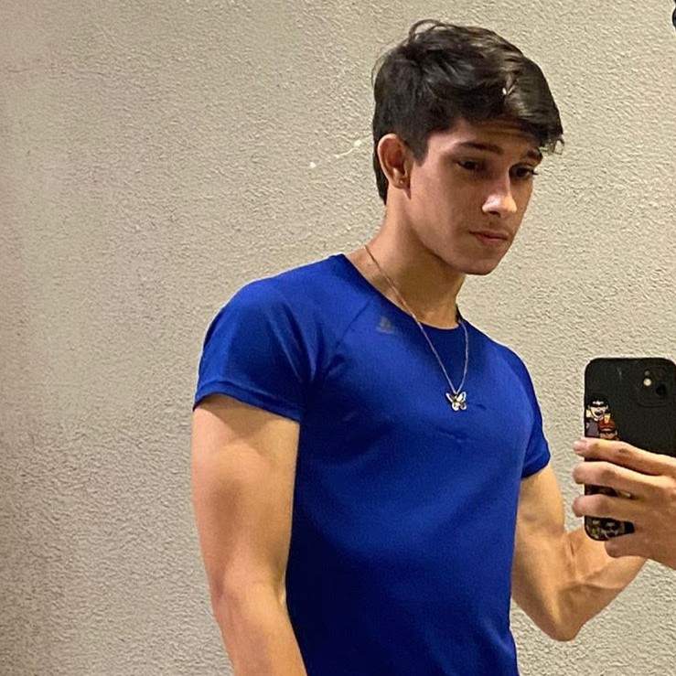
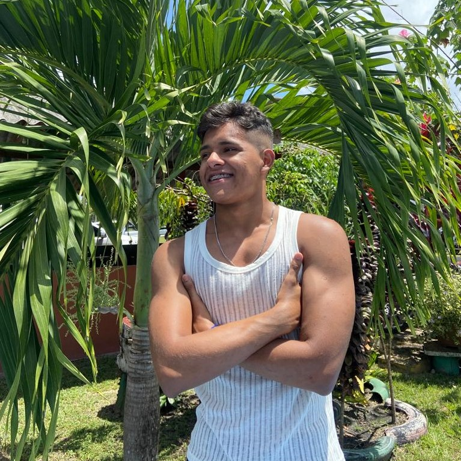

Gabriel Gomes
Web-Developer
Técnico em Desenvolvimento de Sistemas com aplicação a análise de dados, Gabriel sempre achou intrigante o mundo dos algoritmos e dados. Com uma rotina corrida ele encontrou a musculação como forma de ajudá-lo com suas emoções e frustrações, então começou a buscar uma vida mais regulada e saudável. A musculação o ajudou a nunca desistir e focar nos objetivos e é essa a mensagem que ele deseja passar. "Busque sempre se sentir bem consigo mesmo, nossos objetivos devem nos mover não nos aprisionar".



João Lucas
Web-Designer
Estudante de Desenvolvimento de Sistemas do Instituto Federal do Pará, João sempre foi muito esforçado e criativo em seus trabalhos acadêmicos onde descobriu um talento na área de design na qual se aperfeiçoou. Completamente apaixonado por musculação, ele adota um estilo de vida saudável e procura se especializar nas mais diversas áreas da saúde com o intuito de oferecer sempre serviços de qualidade aos seus clientes. "Quero mudar a vida das pessoas assim como a academia mudou a minha".